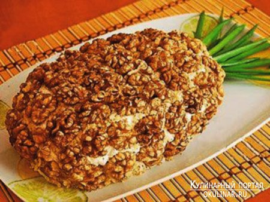

–ецепт салата Ђјнанасї

ƒл€ рецепт салата Ђјнанасї ѕонадоб€тс€ следующие продукты:
—остав:
картофель (сваренный в мундире) - 3-4 шт (350-400 г),
ветчина Ц 200 г,
ананасы (консервированные) Ц 150-200 г,
€йца (вареные) - 5 шт,
1 маленька€ луковица,
€блоко (кислое) - 1 шт,
сок лимона - 1 чайна€ ложка,
майонез,
соль,
свежемолотый перец
дл€ украшени€
грецкие орехи,
зеленый лук
¬аш браузер не поддерживает фреймы.